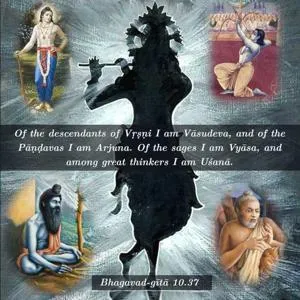
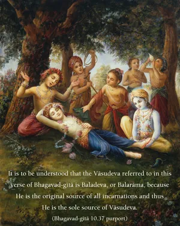

Of the descendants of Vṛṣṇi I am Vāsudeva, and of the Pāṇḍavas I am Arjuna. Of the sages I am Vyāsa, and among great thinkers I am Uśanā.


Kṛṣṇa is the original Supreme Personality of Godhead, and Baladeva is Kṛṣṇa’s immediate expansion. Both Lord Kṛṣṇa and Baladeva appeared as sons of Vasudeva, so both of Them may be called Vāsudeva. From another point of view, because Kṛṣṇa never leaves Vṛndāvana, all the forms of Kṛṣṇa that appear elsewhere are His expansions. Vāsudeva is Kṛṣṇa’s immediate expansion, so Vāsudeva is not different from Kṛṣṇa. It is to be understood that the Vāsudeva referred to in this verse of Bhagavad-gītā is Baladeva, or Balarāma, because He is the original source of all incarnations and thus He is the sole source of Vāsudeva. The immediate expansions of the Lord are called svāṁśa (personal expansions), and there are also expansions called vibhinnāṁśa (separated expansions).
Amongst the sons of Pāṇḍu, Arjuna is famous as Dhanañjaya. He is the best of men and therefore represents Kṛṣṇa. Among the munis, or learned men conversant in Vedic knowledge, Vyāsa is the greatest because he explained Vedic knowledge in many different ways for the understanding of the common mass of people in this Age of Kali. And Vyāsa is also known as an incarnation of Kṛṣṇa; therefore Vyāsa also represents Kṛṣṇa. Kavis are those who are capable of thinking thoroughly on any subject matter. Among the kavis, Uśanā, Śukrācārya, was the spiritual master of the demons; he was an extremely intelligent and far-seeing politician. Thus Śukrācārya is another representative of the opulence of Kṛṣṇa.